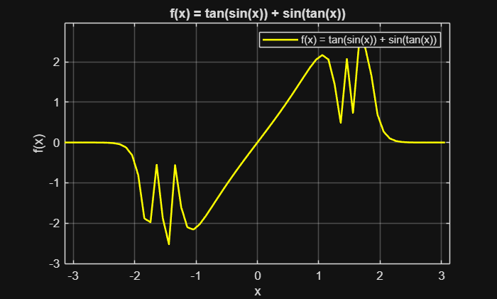
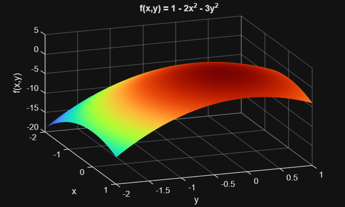
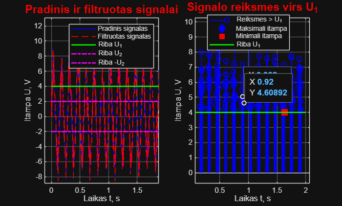
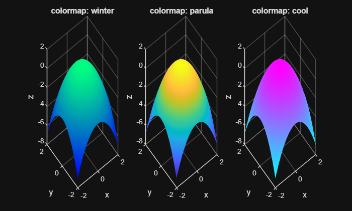
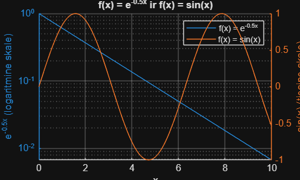
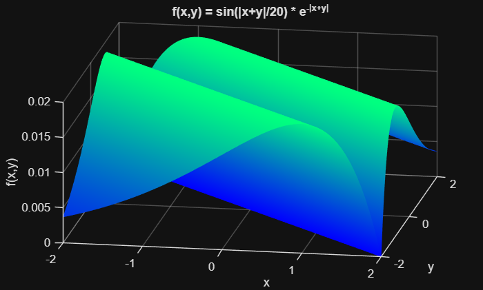

Darbai
MATLAB laboratorinių darbų (LD3–LD4) grafikai: funkcijos, signalai ir 3D paviršiai.
- Visi
- Funkcijų grafikai
- 3D paviršiai
- Signalai
- Spalvų žemėlapiai


Funkcijos grafikas
LD3: funkcijos f(x) = tan(sin(x)) + sin(tan(x)) grafikas intervale [-π; π].


Parabolinis paviršius
LD4: 3D paviršius f(x,y) = 1 - 2x² - 3y², nuspalvintas „turbo“ spalvų žemėlapiu.


Signalo filtravimas
LD3 papildoma užduotis: pradinis ir filtruotas signalai bei reikšmės virš ribos U₁ su pažymėtu maksimumu ir minimumu.


Spalvų žemėlapių palyginimas
LD4 papildoma užduotis: tas pats paviršius z = 1 - (x² + y²) su „winter“, „parula“ ir „cool“ spalvų žemėlapiais.


Grafikas su dviem ašimis
LD3: f(x) = e^(-0,5x) logaritminėje skalėje ir f(x) = sin(x) tiesinėje skalėje viename grafike.


Bangos formos paviršius
LD4: 3D paviršius f(x,y) = sin(|x+y|/20) · e^(-|x+y|), nuspalvintas „winter“ spalvų žemėlapiu.